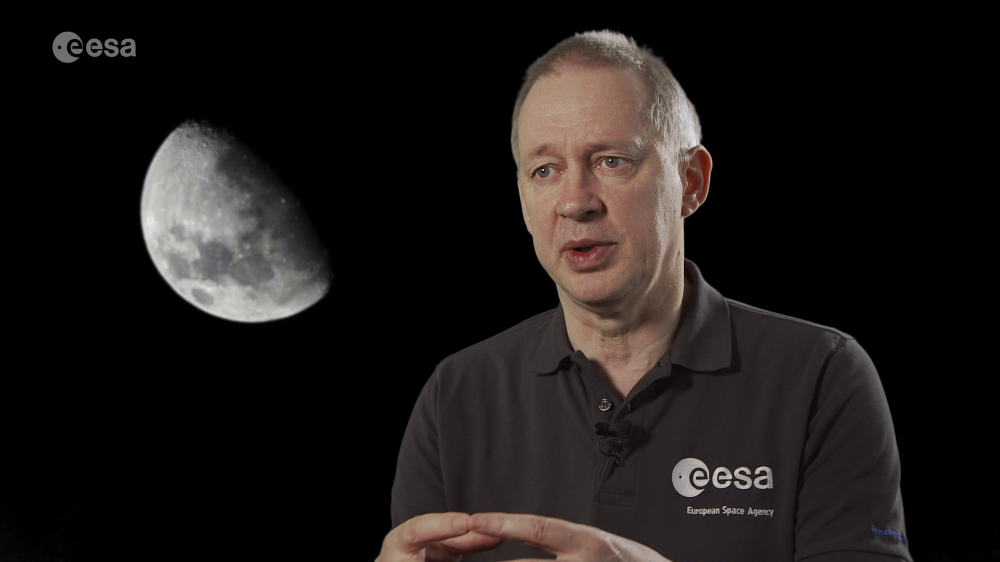
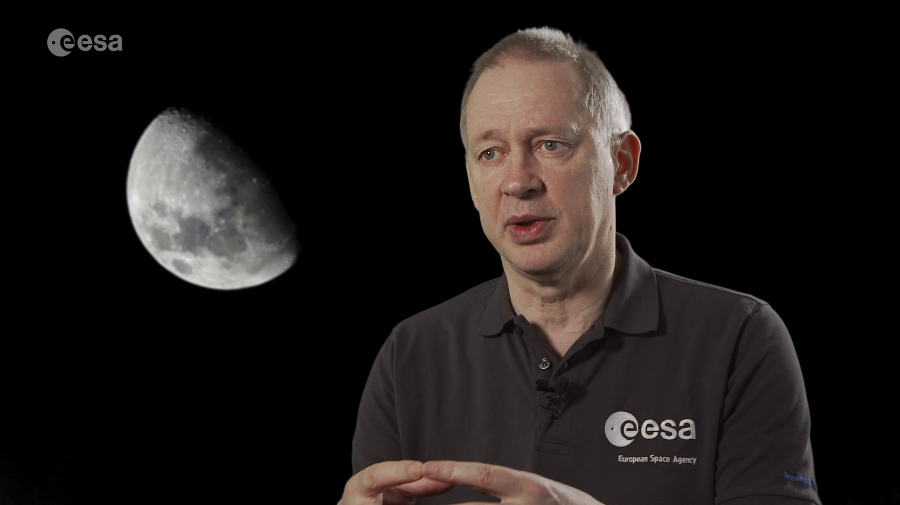
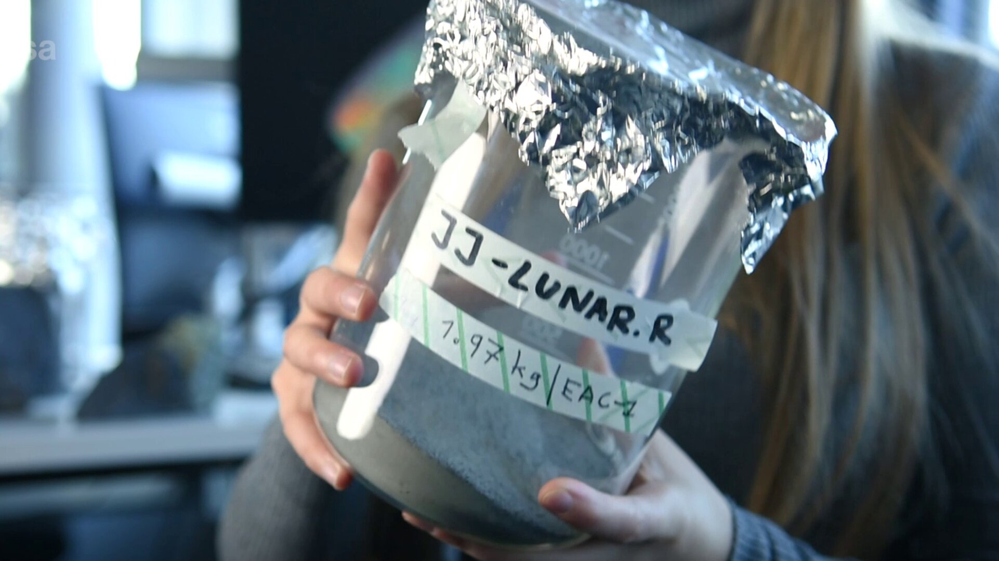
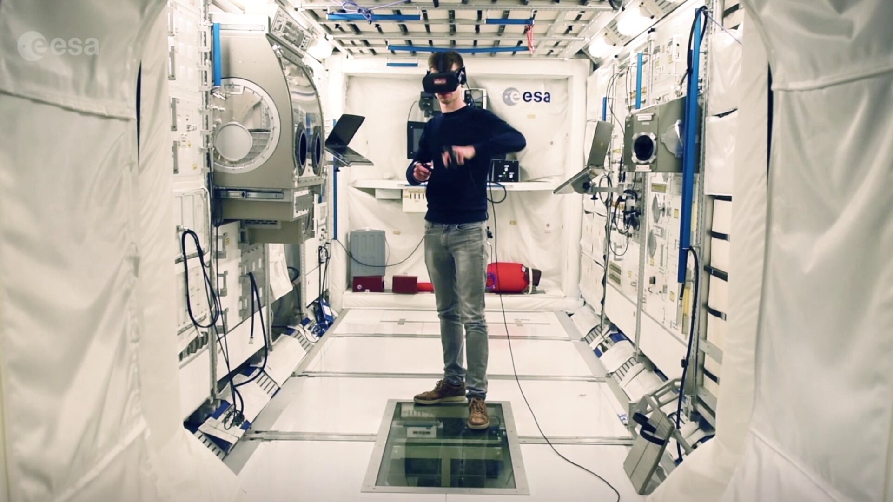

Spaceship EAC
Increasingly complex missions call for innovation in technology and operations. As ESA prepares to explore the lunar surface and beyond, Spaceship EAC unites students and young professionals from across Europe to tackle some of biggest challenges facing the future of human and robotic exploration.
Within ESA’s Exploration Programme (E3P), and as part of the Exploration Preparation, Research and Technology Team (ExPeRT), a number of Spaceship initiatives have been created. These agile innovation environments allow young researchers and affiliated experts to quickly investigate novel operational concepts and technologies at low engagement costs, supported by ESA's expert engineers, astronauts and an extended network of researchers.
 

Access the video
Spaceship EAC is based at the European Astronaut Centre (EAC) in Cologne, Germany. With a mission to enhance, enable and inspire, the team is helping the centre, ESA and researchers prepare for the future of space exploration.
The main activities of Spaceship EAC focus on areas relevant for human spaceflight and future lunar exploration. These include:
- Energy – stand-alone power systems based on hydrogen technology, as well as novel approaches to energy storage, including exploitation of space resources.
- Advanced Manufacturing – 3D printing with regolith on planetary surfaces and conventional 3D printing to support general human exploration.
- Disruptive Technologies – virtual and augmented reality, understanding how VR/AR can be used to enhance astronaut operations, interactions with collaborative robotics, AI, Human Factors, Human Machine Interfaces and Internet of Things (IoT).
- Physiological and Exercise Countermeasures – exploring the implications of lunar gravity on human physiology and potential novel countermeasures, understanding the lunar radiation impact on astronauts, and development of technologies for remote/autonomous management (both preventative and emergency) for astronaut health.
- Space Resources – construction and resource extraction using regolith simulant material, investigating the use of novel ISRU (in-situ resource utilisation) techniques and how they can advance sustainable exploration of planetary surfaces.

Access the video
Projects carried out under Spaceship EAC are pragmatic, demonstration-driven and innovative in scope. The initiative links to related activities within ESA and with varied stakeholders across Europe, forming a collaborative environment to advance many low-level technologies and concepts. The practical, demonstration focus gives rise to a ‘skunk works’ type approach, providing ExPeRT an agile capability to quickly explore technologies and concepts.
A key element of the team is the regular engagement with students. Most students involved in Spaceship EAC undertake a six-month internship at the Centre. They come from a variety of academic backgrounds and work on a range of low technology readiness level (TRL) projects or centre enhancement activities. Learn more about projects that have been developed within Spaceship EAC on the ESA Exploration blog.

Access the video
Applications open in November.
Interested students are also asked to familiarise themselves with the general terms and conditions of ESA internships here.